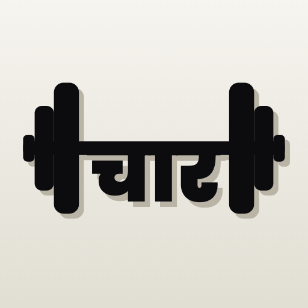

char logSupport
Something not working, a food missing, or an idea? Email charlogdev@gmail.com.
Most answers are in the app. Open the You tab, then the gear for Settings: your plan, reminders, the voice (bol-chal or plain English), Your data (export, restore from a backup, the privacy policy, delete everything) and Help and about.
Circles: to report a post or a comment, tap its ⋯ (or press and hold a comment). To report or block someone, open their profile or the circle and tap the ⋯. Reports come to us and the person isn't told who sent them. Read the child safety standards. To leave, open the circle and tap Leave. To delete your circles account, use the menu at the top right of the Circle tab.
Feeling low about food or your body? Tele-MANAS is free, 24x7, in your language: call 14416.